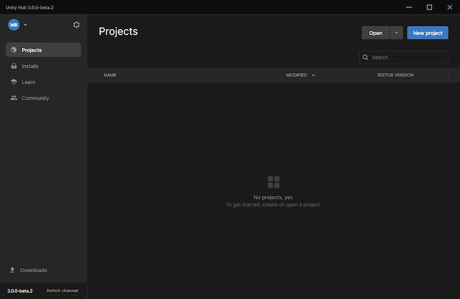

Getting started with an existing Plastic SCM repository¶
Suppose you want to start working on a Unity project in an existing Plastic SCM repository and already have a Plastic SCM account linked to your Unity ID. In that case, you will be able to open the project straight from the Unity Hub. A workspace will automatically be created for your project on your machine.
In the Unity Hub v3 Beta, click Open > Open remote project to see the list of your Plastic SCM repositories that contain a Unity project.
Click the project and click Next.
Click the Editor version and platform and click the change version button.
In the Editor pop-up, click the Migrate button to migrate your local workspace to a Plastic SCM workspace
Once the migration is completed, click the Open Plastic SCM button.

Accessing the Plastic SCM Window¶
You can access the Plastic SCM window in the Unity Editor by clicking Window > Plastic SCM.